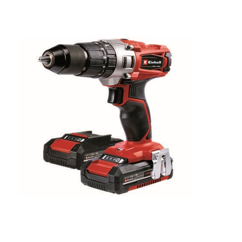

Taladro Percutor/Atornillador Inalámbrico
- 3 modos de Luz LED proporciona iluminación en entornos de trabajos oscuros. Brinda luz hasta 20 veces más brillante que el modelo anterior
- Motor Sin Carbones (Brushless) ofrece hasta un 75% más de tiempo de ejecución que las herramientas con carbones de NiCad
- Modo de reflector cuenta con una función de apagado de 20 min que permite un tiempo de trabajo prolongado en espacios oscuros o estrechos
